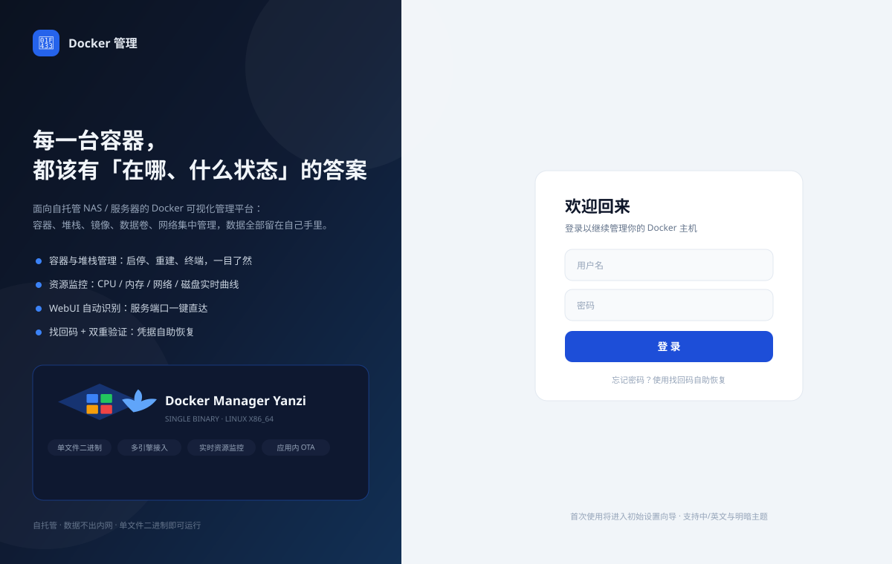
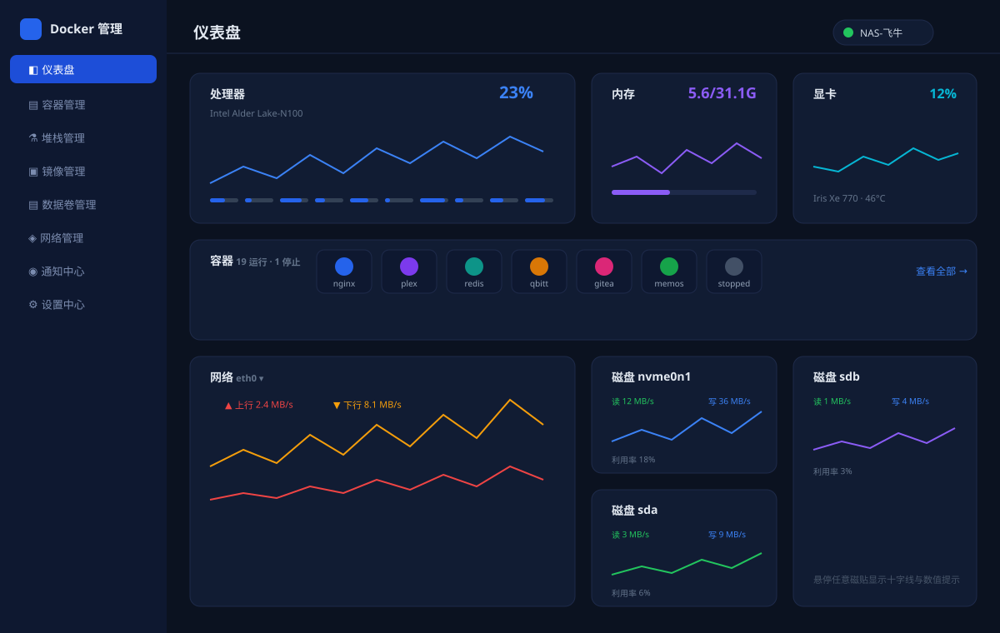
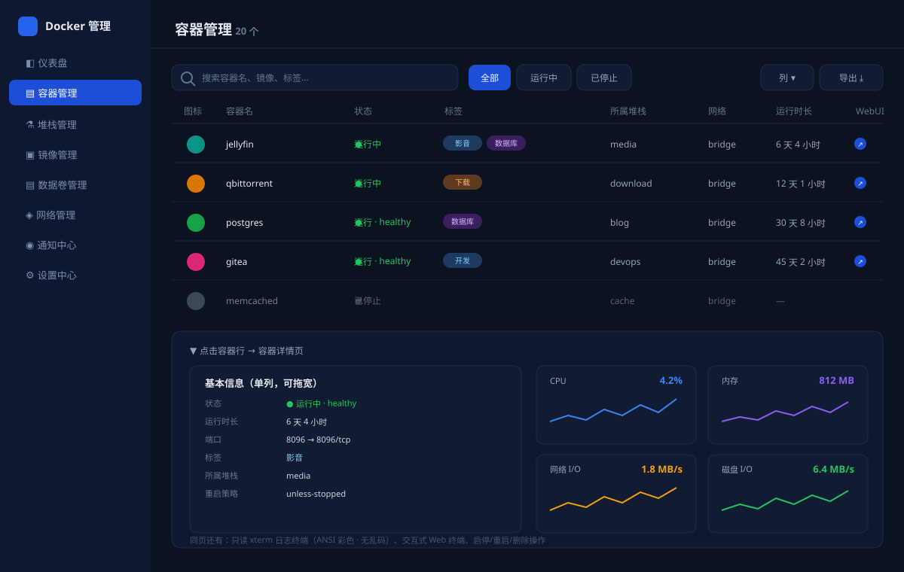
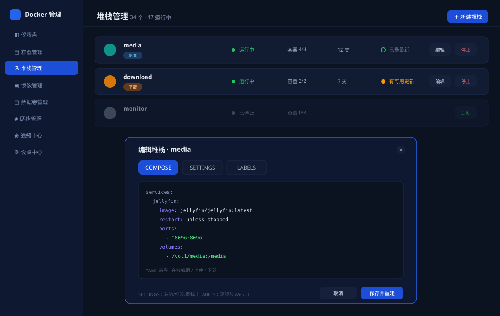
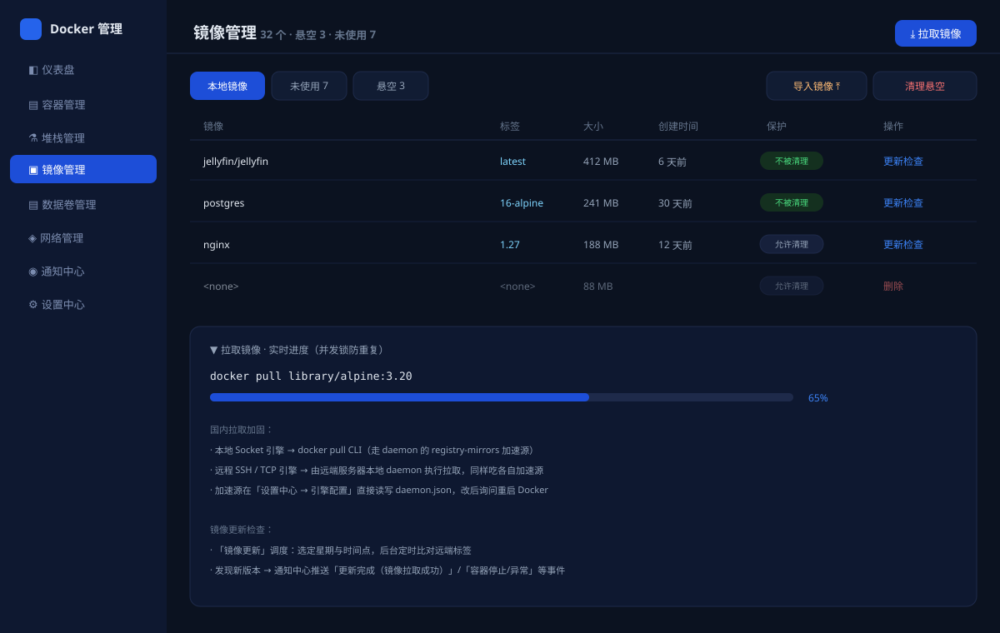
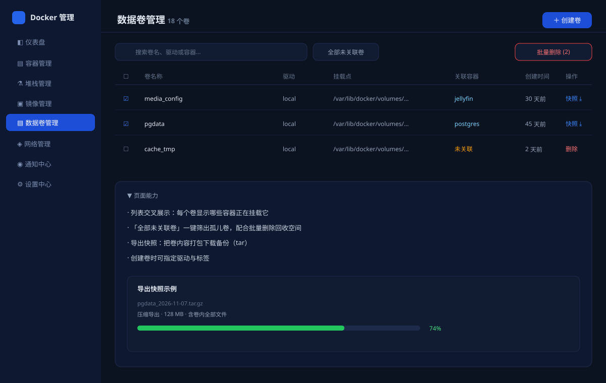
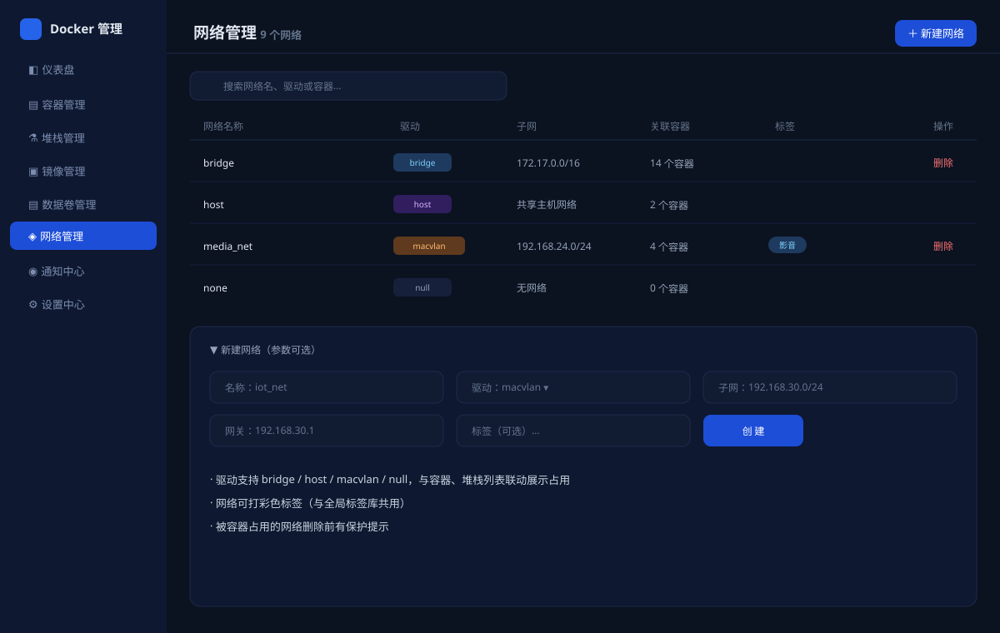
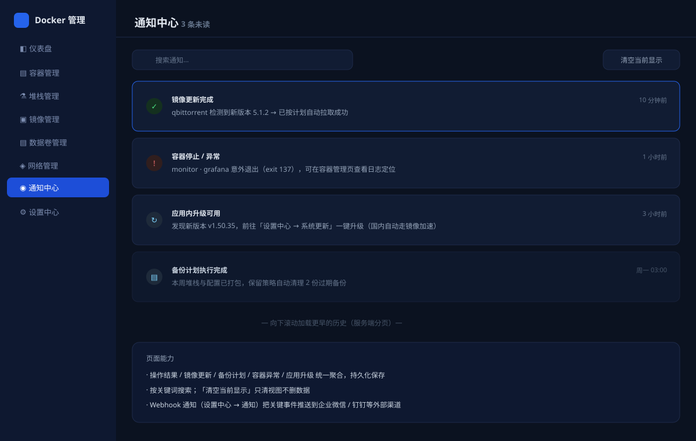
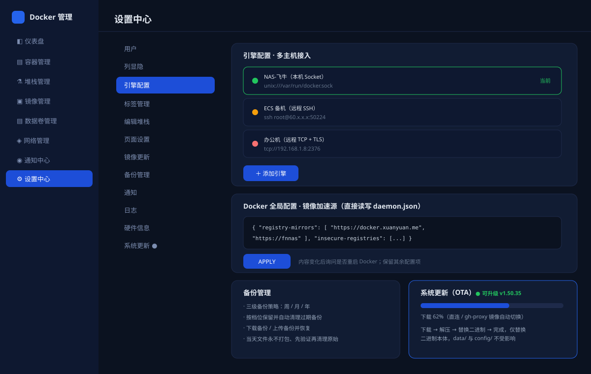

登录页 安全会话
左侧深海军蓝品牌区 + 右侧登录表单；首次使用进入初始设置向导。支持多用户、找回码自助恢复、空闲自动登出、中/英文与明暗主题。

仪表盘 全局总览
整机与容器全局状态一览：处理器逐核占用、内存、显卡、容器图标卡片墙、网络速率（网卡可切换）、每块磁盘独立读写曲线。四张资源磁贴共享悬停十字线与提示框，时长可调。

容器管理 高频操作
全部容器平面清单：搜索 / 状态筛选 / 自定义列 / 导出清单；标签胶囊与所属堆栈交叉展示；行尾球形按钮一键打开 WebUI。点击行进入详情页：资源监控四卡曲线、只读 xterm 日志（字节级 demux 无乱码）、交互式 Web 终端。

堆栈管理 核心页面
以 docker-compose 堆栈为中心（交互蓝本来自 Unraid Compose）：整栈启停 / 重建 / 更新检测；编辑弹窗含 COMPOSE（YAML 高亮在线编辑/上传/下载）、SETTINGS（名称/描述/标签/图标自动匹配）、LABELS（逐服务 WebUI 与图标）三页签。

镜像管理 国内拉取加固
本地 / 未使用 / 悬空分类统计；拉取进度实时显示、并发锁防重复；保护标记防误清理；tar 离线导入；后台定时检查镜像更新并推送通知。加速源直接读写 daemon.json，国内拉取自动走加速。

数据卷管理 存储
卷列表交叉展示关联容器；一键筛出孤儿卷并批量删除；卷内容打包导出快照备份。

网络管理 拓扑
Docker 网络列表与驱动（bridge / host / macvlan / null）标识、关联容器占用；新建网络支持子网 / 网关 / 标签；与容器、堆栈页联动。

通知中心 事件聚合
镜像更新 / 容器异常 / 备份计划 / 应用升级等事件统一聚合、持久化保存；滚动加载历史、关键词搜索、一键清空当前视图；支持 Webhook 推送外部渠道。

设置中心 12 分区
用户 / 列显隐 / 引擎配置（多主机接入 + 镜像加速源）/ 标签管理 / 编辑堆栈 / 页面设置（含图标库目录绑定）/ 镜像更新调度 / 备份管理（周/月/年三级策略）/ 通知 / 日志 / 硬件信息 / 系统更新（OTA 实时进度条，国内自动切镜像）。
